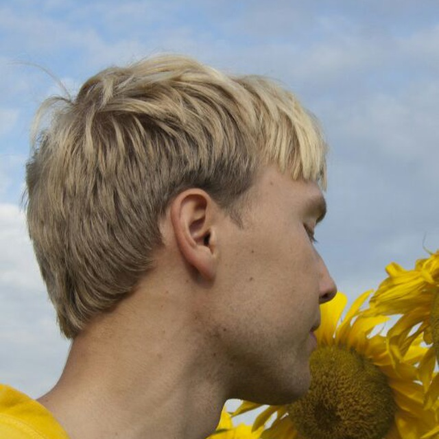
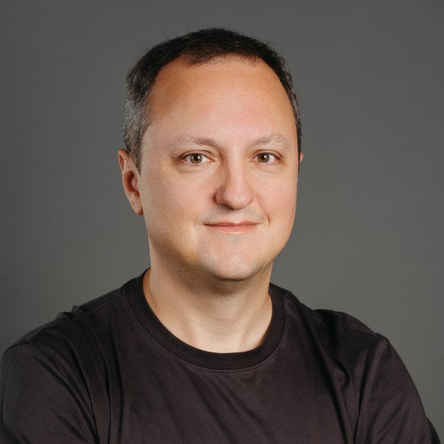
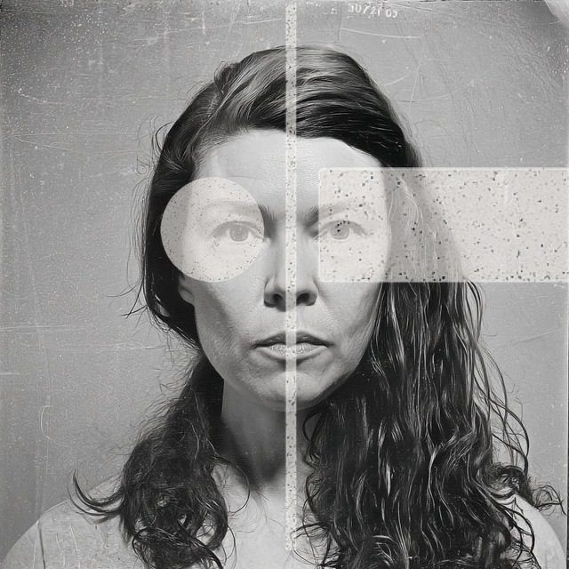

start · 10 slides
AIN3 Intro
Аудитория, лаборатория, кураторы, Compass, buddy, LMS, Tutor и недельный ритм.
открыть deck ↗Люди, программа, рабочие артефакты и агентный контур – в одном публичном маршруте.





Intro рассказывает про людей и механику. Практические деки ведут один реальный процесс до проверяемого артефакта.
Аудитория, лаборатория, кураторы, Compass, buddy, LMS, Tutor и недельный ритм.
открыть deck ↗Source map, naming, context pack, skill, first run, evidence и переносимый набор.
открыть deck ↗Рамка процесса, узкое место, критерий качества и первый operating brief.
открыть deck ↗Практика удержания рабочего маршрута, следующего действия и evidence.
открыть deck ↗Календарь, записи, материалы и прогресс участника в авторизованном контуре.
перейти в LMS ↗Редактируемая история презентаций и все публичные артефакты лабы.
открыть repository ↗Naming создаёт каталог. Context pack держит состояние. Skill повторяет процедуру. Evidence оставляет проверяемый след.
Публичный режим показывает механику на синтетическом участнике. Контракт LMS Tutor ограничивает контекст текущим участником; staff-контур спроектирован отдельным и аудитируемым.
Контракт связывает разрешённые сигналы, состояние, следующий шаг и receipt. Отправка сообщений и изменение статуса требуют подтверждения человека.
У каждого занятия есть владелец рамки, практики или проверки. Профили ниже – публичные спикеры и кураторы, без данных участников.



